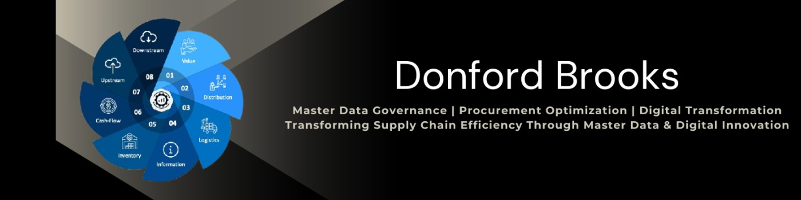

Senior Supply Chain leader with 17+ years of experience driving supplier performance, operational readiness, and cross-functional execution within aerospace and Pharmaceutical sectors.
In the aerospace industry, I have built a strong leadership presence by driving supply chain operations, procurement excellence, and performance governance. I have led large cross-functional teams to significantly improve PO accuracy, on-time delivery (OTD), and overall compliance performance.
I have spearheaded automation initiatives, including RPA solutions, Power BI dashboards, and digital portals, to enhance operational visibility and efficiency. Through Lean and CORE-driven continuous improvement programs, I have delivered measurable cost savings and created additional operational capacity.
Within the pharmaceutical sector, I played a key role in SAP S/4HANA transformation programs, ensuring seamless integration across supply chain and finance functions. I strengthened global master data frameworks to support regulated environments and maintain compliance standards.
I have also collaborated extensively across global markets, aligning business processes with broader digital transformation strategies to enable consistency and scalability.
I bring over 18 years of experience in Master Data Management, primarily within the Materials domain. I have led SAP MDG implementations, designed governance frameworks, and driven enterprise-wide data standardization initiatives.
I established data quality KPIs, catalogues, and governance councils to improve data accuracy, transparency, and control across systems. Additionally, I enabled automation and analytics platforms such as Power BI to support data-driven decision-making at leadership levels.
Home